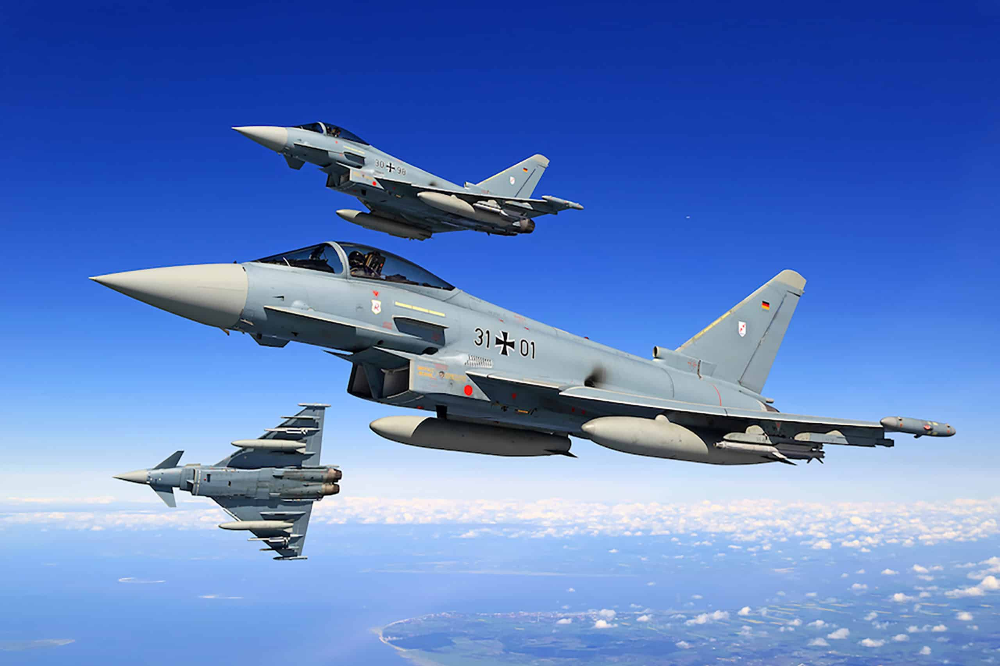

Eurofighter Typhoon
Az Eurofighter Typhoon a világ egyik legfejlettebb, többfeladatú harci repülőgépe, amelyet Európa vezető védelmi ipari vállalatai közösen fejlesztettek ki. A repülőgép célja, hogy maximális teljesítményt, kiemelkedő manőverezőképességet és technológiai fölényt biztosítson a 21. század légi hadviselésében.
A Typhoon fejlesztése az 1980-as években kezdődött, Németország, az Egyesült Királyság, Olaszország és Spanyolország együttműködésével. Az együttműködés célja egy közös, csúcstechnológiás vadászgép megalkotása volt, amely képes a NATO szövetséges erőinek védelmére és támogatására. A gyártást a Eurofighter GmbH koordinálja, amely mögött olyan ipari óriások állnak, mint a BAE Systems, Airbus és Leonardo.
